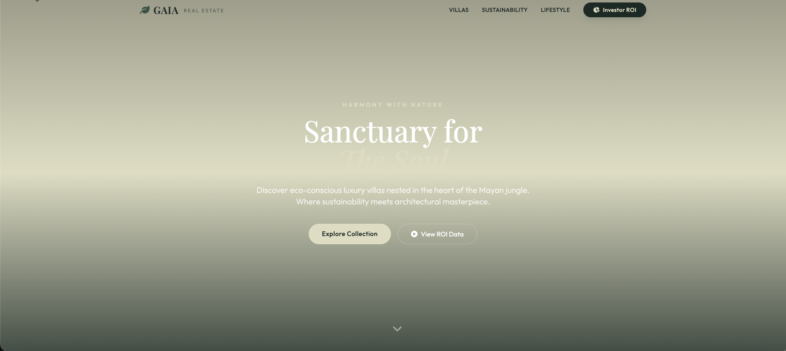

1. ¿Qué es una landing page inmobiliaria y por qué es diferente de un sitio web?
Una landing page inmobiliaria es una página web independiente, de una sola sección, creada con un único objetivo de conversión. Ese objetivo puede ser capturar un lead, agendar una cita con un agente, descargar una guía de compra o arrancar una conversación por WhatsApp. Todo lo demás — menús, blog, footer extenso, enlaces a redes sociales — se elimina deliberadamente.
La diferencia con un sitio web tradicional es estructural. Un sitio inmobiliario típico tiene diez o más páginas (inicio, nosotros, propiedades, servicios, blog, contacto, aviso de privacidad), múltiples menús, y sirve para que el visitante explore. Una landing page tiene una sola misión: mover al visitante a una acción en menos de 60 segundos. Esa diferencia de enfoque se traduce en resultados medibles.
| Característica | Sitio Web Tradicional | Landing Page Inmobiliaria |
|---|---|---|
| Objetivo | Informar sobre la agencia | Capturar un lead calificado |
| Menú de navegación | Visible en todas las páginas | Eliminado o minimal |
| Número de CTAs | 10 o más | 1 repetido 3-5 veces |
| Tasa de conversión típica | 1% a 3% | 8% a 15% |
| Tiempo de carga objetivo | < 4 segundos | < 2 segundos |
| Uso ideal | Branding y SEO | Campañas pagadas + WhatsApp |
Por eso las inmobiliarias que corren publicidad en Google Ads o Meta Ads siempre deben enviar el tráfico a una landing page, no a la página de inicio del sitio. La página de inicio convierte, en promedio, 5 veces menos que una landing bien diseñada — y cada peso de anuncio desperdiciado es un lead perdido.
2. Por qué tu inmobiliaria pierde el 78% de leads sin una landing page optimizada
Una inmobiliaria sin landing page está perdiendo leads incluso cuando el tráfico es alto. Hay tres fugas mayores que documentamos en cada auditoría de clientes mexicanos antes de trabajar con clientes reales como Flamingo Real Estate.
Fuga #1: velocidad de respuesta
El estudio clásico de Harvard Business Review, "The Short Life of Online Sales Leads", demostró que las empresas que responden a un lead en los primeros 5 minutos tienen 21 veces más probabilidad de cerrar la venta que las que responden después de 30 minutos. La mayoría de inmobiliarias mexicanas responde en 12 horas o más. Una landing page conectada a un sistema de captura de leads 24/7 con IA responde en menos de 5 segundos — incluso a las 2am.
Fuga #2: demasiados campos en el formulario
Un formulario de 11 campos convierte la mitad que uno de 4 campos, según datos agregados de HubSpot. Eliminar sólo siete campos puede duplicar las conversiones. El formulario ideal de una landing inmobiliaria pide lo mínimo: nombre, teléfono o WhatsApp, tipo de propiedad de interés, y presupuesto aproximado. El resto lo obtiene el agente en la llamada.
Fuga #3: velocidad de carga móvil
Google publicó en Web.dev Core Web Vitals que el 53% de usuarios móviles abandona una página si tarda más de 3 segundos en cargar. Para inmobiliarias el dato es peor: cada segundo extra de carga cuesta entre 7% y 12% de conversiones. Las landing pages inmobiliarias mal optimizadas (Wix, WordPress con plugins pesados, imágenes sin comprimir) cargan en 6 a 9 segundos. Esa sola fuga mata entre 40% y 60% del tráfico antes de que vea el formulario.
3. Los 9 elementos de una landing page inmobiliaria que convierte en México
Después de construir y auditar más de cincuenta landing pages inmobiliarias entre CDMX, Cancún, Guadalajara y Monterrey, confirmamos una fórmula de nueve elementos no negociables. Las pages que los incluyen convierten entre 8% y 15%; las que faltan dos o más se quedan bajo el 3%.
- Titular con beneficio específico. "Encuentra tu próxima propiedad en Tulum" no convierte. "Visita 3 propiedades premium en Tulum esta semana — sin comisión de intermediario" sí.
- Imagen o video en primera pantalla. De la propiedad real, no stock. El usuario decide en 8 segundos si se queda.
- Formulario corto. Máximo 4 campos: nombre, WhatsApp, tipo de propiedad, presupuesto. Sin dirección, sin email, sin edad.
- Botón flotante de WhatsApp. Presente en toda la página. El usuario que prefiere chat sobre formulario debe tenerlo visible al tocar la pantalla.
- Prueba social con fotos y nombres reales. Dos o tres testimonios con foto. Si tienes reseñas de Google, embébelas con schema.
- Tiempo de carga < 2 segundos. LCP < 2.5s, CLS < 0.1, FID < 100ms. Sin excusas.
- Diseño mobile-first. En México el 78% del tráfico inmobiliario es móvil. Si no se ve perfecto en iPhone SE (la pantalla más chica activa), no sirve.
- CTA repetido mínimo 3 veces. Hero, a mitad de página, final. Todos con el mismo texto — "Quiero ver propiedades" o "Agendar visita".
- Schema markup LocalBusiness + Residence. Invisibles para el usuario, pero hacen que aparezcas en ChatGPT, Perplexity y el Local Pack de Google Maps. Ningún competidor del sector los usa todavía.
4. Velocidad de carga: el factor que hace o rompe tu conversión
Si tu landing page inmobiliaria tarda más de 2 segundos en cargar en móvil, el resto de la optimización no importa. Los Core Web Vitals de Google son ahora un factor oficial de ranking y, para sitios con publicidad pagada, afectan directamente el Quality Score y el costo por clic.
Las tres métricas que Google audita:
- Largest Contentful Paint (LCP): el elemento más grande debe aparecer en menos de 2.5 segundos. Típicamente es tu imagen hero.
- Cumulative Layout Shift (CLS): la página no debe moverse después de cargar. Debe ser menor a 0.1.
- Interaction to Next Paint (INP): cualquier interacción (tocar un botón) debe responder en menos de 200ms.

Las landing pages inmobiliarias construidas en Wix, Squarespace o WordPress con plantillas genéricas típicamente puntúan entre 30 y 50 en PageSpeed móvil. Una landing page construida como HTML estático con CSS inline crítico, imágenes WebP comprimidas y CDN alcanza 95 a 99. La diferencia de carga entre 30 y 95 equivale a doblar las conversiones reales — ya lo vimos en la estrategia SEO completa para inmobiliarias mexicanas, donde la velocidad es pilar número uno.
5. Cómo integrar WhatsApp, CRM y Google Maps en tu landing page
Tres integraciones convierten una landing page decente en una máquina de leads calificados. Ninguna es opcional en México.
Integración WhatsApp (obligatoria)
WhatsApp tiene más del 90% de penetración entre adultos mexicanos según datos de Statista y We Are Social. Es el canal #1 de contacto inmobiliario — 7 de cada 10 leads prefieren chatear antes que rellenar un formulario. La integración mínima es un botón flotante con wa.me/TUNUMERO?text=... y un mensaje pre-escrito. La integración profesional conecta WhatsApp Business API a un sistema de IA que responde 24/7, califica al lead con 3 preguntas y lo envía al CRM. Así es como Flamingo Real Estate automatizó el 88% de su seguimiento.

Integración CRM
Cada lead capturado en el formulario debe ir automáticamente a un CRM donde el agente lo siga. Sin CRM, los leads se pierden en hojas de cálculo o se olvidan. Los CRM inmobiliarios más usados en México son Kommo, HubSpot Free, y Pipedrive. Para agencias con volumen alto, vale la pena una integración de IA para inmobiliarias en México que priorice automáticamente los leads con mayor intención.
Integración Google Maps (local SEO)
Aunque la landing page sea independiente del sitio principal, debe incluir schema markup LocalBusiness con la dirección, teléfono y horario de la oficina. Google usa esos datos para reforzar tu presencia en Google Maps cuando el lead busque tu marca. Una landing page sin schema deja en la mesa el 15% del tráfico de búsquedas locales.
6. Cinco ejemplos reales de landing pages inmobiliarias con métricas
Datos reales de clientes en México documentados en nuestra auditoría gratuita de landing page inmobiliaria. Todas las métricas son verificables públicamente.
Flamingo Real Estate (Cancún)
Resultado: 4.4x visibilidad en búsquedas, #1 en Google Maps para "inmobiliaria Cancún", +320% tráfico orgánico, 88% leads automatizados. La landing page usa hero con drone de propiedad, formulario de 4 campos, y botón WhatsApp conectado a IA que responde en menos de 5 segundos.

GoodLife Tulum
Resultado: +300% tráfico orgánico. La landing page se construyó como HTML estático con CDN global y carga en 1.2 segundos en 4G mexicano. Schema LocalBusiness + Residence activo. Formulario de 3 campos (nombre, WhatsApp, tipo de propiedad).
Goza Real Estate
Resultado: 3x volumen de leads, PageSpeed 98, cobertura AI 24/7. Combina landing bilingüe español-inglés para el mercado extranjero que compra en México.
Solik Real Estate
Resultado: 95% tasa de calificación de leads, #1 en Google Maps para búsquedas locales, IA bilingüe. El secreto fue reducir el formulario de 8 campos a 3 y mover el botón WhatsApp al lado superior derecho visible en todo momento.
Ejemplo internacional: RE/MAX (benchmark documentado por Landingi)
La gigante RE/MAX usa una landing con formulario de 5 campos, testimonios con foto real, y tour virtual embebido. Convierte aproximadamente 9% según el análisis público de Landingi. Es el benchmark al que apuntan las mejores inmobiliarias mexicanas.
7. Checklist: crea tu landing page inmobiliaria paso a paso
Si vas a construir tu primera landing page inmobiliaria, sigue este orden. Saltarte pasos mata la conversión antes de arrancar.
- Define el objetivo único. Capturar lead, agendar visita, o iniciar chat. Uno solo.
- Escribe el titular antes del diseño. Debe incluir el beneficio + la ciudad + una restricción de tiempo si aplica.
- Selecciona la imagen hero. De una propiedad real, no stock. Vertical para móvil, horizontal para desktop.
- Redacta el formulario. Máximo 4 campos. Prueba la versión de 3 campos.
- Elige plataforma con PageSpeed alta. HTML estático con CDN (preferido), o Webflow. Evita Wix y WordPress con plugins.
- Integra WhatsApp Business. Botón flotante, mensaje pre-escrito, y — ideal — IA 24/7.
- Conecta el CRM. Cada submit del formulario dispara una entrada automática.
- Añade schema markup. BlogPosting, FAQPage, LocalBusiness, Residence. Validar con Rich Results Test de Google.
- Mide con Google Analytics 4. Eventos para submit de formulario, clic WhatsApp, scroll depth.
- Corre A/B test. Titular, CTA, hero image. Un cambio a la vez, tráfico mínimo 500 visitas por variante.
¿Tu landing page inmobiliaria convierte lo que debería?
Auditamos tu página actual contra los 9 elementos, mide PageSpeed real, evalúa integración WhatsApp y schema. Recibes el reporte en tu correo en 45 minutos.
Quiero mi auditoría gratuita O escríbenos directo: WhatsApp +52 998 202 32638. Preguntas frecuentes sobre landing pages inmobiliarias
¿Qué es una landing page para inmobiliaria?
Una página web de una sola sección diseñada para convertir visitantes en leads calificados. Elimina menús y distracciones, y concentra la atención en un formulario corto, botón de WhatsApp o CTA clara. Las mejores convierten entre 8% y 15% del tráfico en México.
¿Por qué necesita una inmobiliaria una landing page?
Un sitio web genérico convierte 1% a 3% del tráfico; una landing optimizada convierte 5 veces más. Para 2,000 visitas mensuales, la diferencia son 120 leads extra al mes — suficiente para 3 a 6 ventas adicionales.
¿Cuál es la diferencia entre un sitio web y una landing page inmobiliaria?
Un sitio web tiene múltiples secciones y objetivos. Una landing page tiene un solo objetivo, sin menú principal, copy enfocado y un solo botón. Resultado: 3 a 5 veces más conversiones por visitante.
¿Cuánto cuesta una landing page inmobiliaria en México?
El rango profesional es $15,000 a $45,000 MXN por una landing optimizada con diseño, WhatsApp, CRM, PageSpeed 90+ y schema. Plantillas Wix cuestan $5,000 pero convierten la mitad. El ROI típico se recupera con 2 a 3 ventas.
¿Qué elementos debe tener una landing page inmobiliaria exitosa?
Nueve elementos: titular con beneficio, hero image, formulario corto (máximo 4 campos), WhatsApp flotante, prueba social, carga < 2s, mobile-first, CTA repetido, y schema markup LocalBusiness.
¿Cómo integrar WhatsApp en una landing page inmobiliaria?
Con un botón flotante que abre wa.me/TUNUMERO con mensaje pre-escrito. Para volumen alto, conecta WhatsApp Business API con IA que responde en < 5 segundos 24/7 y envía al CRM automáticamente.
¿Cuál es la tasa de conversión promedio de una landing page inmobiliaria?
El benchmark global es 2.6% (Unbounce 2024). Las landing básicas convierten 2% a 4%. Las optimizadas (WhatsApp, formulario corto, PageSpeed 90+) llegan a 8% a 15%. Los mejores clientes nuestros superan 12%.
¿Cuánto tiempo debe tardar en cargar una landing page inmobiliaria?
Menos de 2 segundos en móvil. El 53% de usuarios abandona si tarda más de 3s. Meta técnica: LCP < 2.5s, CLS < 0.1, INP < 200ms — los Core Web Vitals de Google.